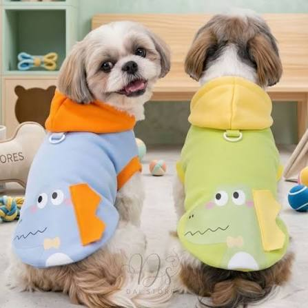
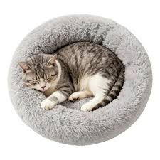

Acessórios
Roupas, camas e brinquedos para deixar o seu pet mais confortável e divertido.
Nesta página: Moletom com capuz | Cama redonda macia
Moletom com capuz para cães

Moletom quentinho de algodão com capuz, ideal para os dias frios do inverno gaúcho. Fácil de vestir e lavar.
- Tamanhos: P, M e G
- Cores: verde e azul
- Material: algodão com forro de flanela
Preço: R$ 59,90
ou 2x de R$ 29,95 sem juros
Pedir pelo e-mail
Cama redonda macia
Novidade

Cama redonda com borda alta e enchimento macio. Serve para cães pequenos e gatos.
- Tamanho: 50 cm de diâmetro
- Capa removível e lavável na máquina
- Base antiderrapante
Preço: R$ 69,90
ou 3x de R$ 23,30 sem juros
Pedir pelo e-mail